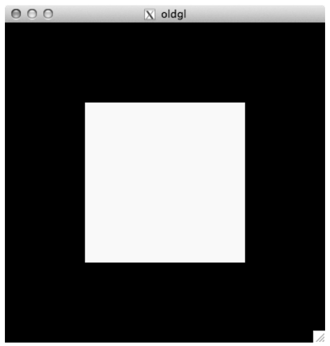
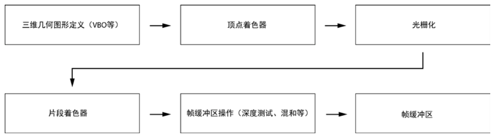
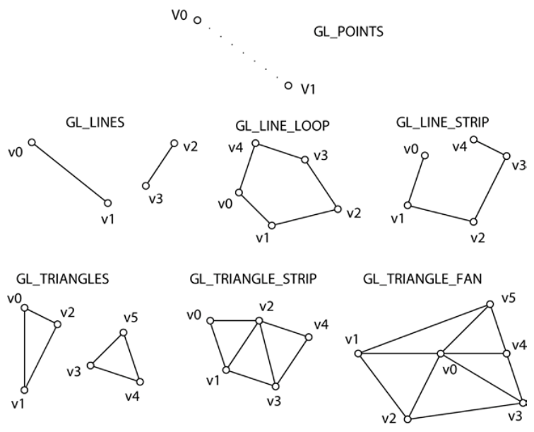
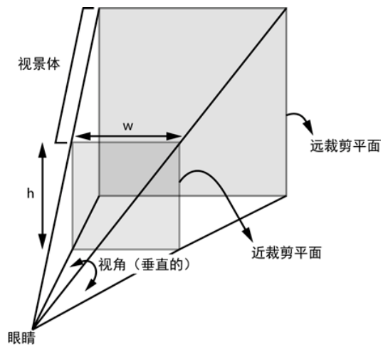
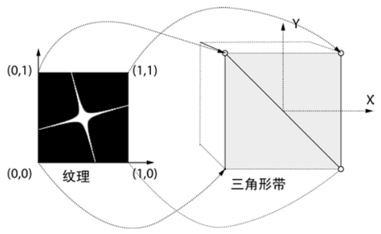
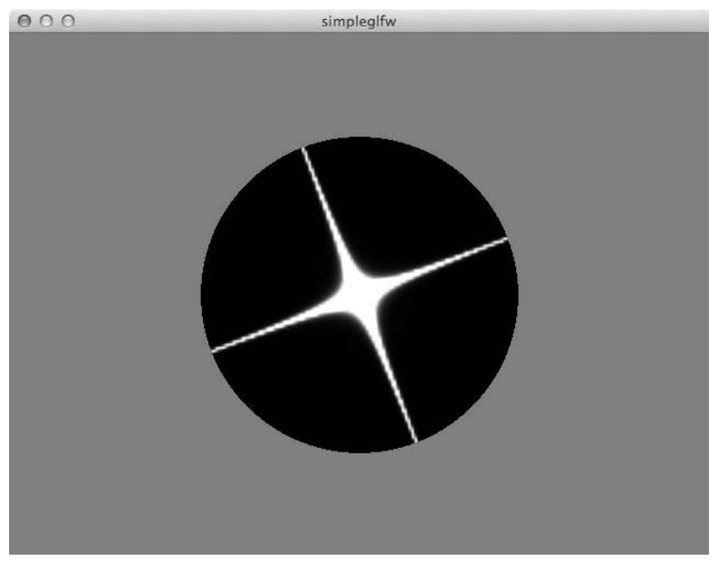
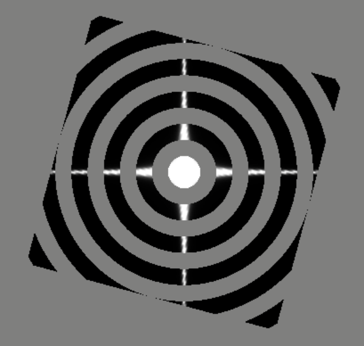

第 9 章 理解 OpenGL#
本章解决：OpenGL 如何在 Python 里驱动 GPU 画三维图形——OpenGL 是给图形处理单元（GPU）增加的软件接口，GLFW 是创建窗口、管理 OpenGL 上下文的工具包；用类 C 语言的 OpenGL 着色语言（GLSL）编写顶点着色器与片段着色器，在 GPU 上完成几何变换与上色，最终画出一个旋转的、纹理贴图的多边形，并用片段着色器把方形边界剪成一个黑色圆圈。 承上启下：本章是第 9–11 章 OpenGL 三部曲的地基——三维图形管线、齐次坐标变换、VAO/VBO、GLSL 着色器这套词汇在第 10 章粒子系统和第 11 章分形中直接复用；"把计算写进着色器、搬到 GPU 上跑"也是这三个项目共同的性能来源。
📓 章代码：nb/ch09.ipynb（分节代码；ch01–08 含固定种子实跑输出，ch09–14 为完整实现待硬件环境）
GPU 经过优化，以并行的方式对大量数据反复执行相同的操作，做这类工作时比中央处理单元（CPU）快得多。除了渲染计算机图形，GPU 也用于通用计算，如今已有专门的语言让人用 GPU 硬件完成这类工作。本项目就要利用 GPU、OpenGL 和着色器。
Python 是一种极好的"胶水"语言：对于其他语言（如 C）编写的库，存在大量 Python 绑定，让你在 Python 中使用它们。本章和第 10、11 章使用 PyOpenGL——OpenGL 的 Python 绑定——来创建计算机图形。
OpenGL 是一个状态机（State Machine）：有点像一个电器开关，只有开和关两种状态，一旦切换就保持在新状态。但它比电器开关复杂——更像一个有许多开关和表盘的交换机：一旦更改特定设置的状态，它就保持为关，直到你再次打开。如果一个 OpenGL 调用绑定到某个对象上，那随后的相关调用都会发送给这个对象，直到解除绑定。理解"状态机"这一点，后面的绑定/解绑操作才不显得神秘。
本项目引入的概念：
- 使用针对 OpenGL 的 GLFW 窗口库；
- 使用 GLSL 编写顶点和片段着色器；
- 进行纹理贴图；
- 使用三维变换。
9.0 本章导图#
9.1 老式 OpenGL#
在大多数计算机图形系统中，绘图的方式是将一些顶点发送给处理管线（Pipeline）——管线由一系列功能模块互相连接而成。最近，OpenGL 应用编程接口（API）从固定功能的图形管线转为可编程的图形管线。本书专注现代 OpenGL，但网上会看到许多"老式"OpenGL 的例子，先看看这个 API 过去的样子，才能更好地感受所发生的变化。
下面这个简单的老式 OpenGL 程序在屏幕上画一个黄色矩形：
# ===== 书 9.1 节：老式 OpenGL 画黄色矩形（GLUT） =====
import sys
from OpenGL.GLUT import *
from OpenGL.GL import *
def display():
glClear(GL_COLOR_BUFFER_BIT | GL_DEPTH_BUFFER_BIT) # 清空颜色与深度缓冲区
glColor3f(1.0, 1.0, 0.0) # 当前颜色设为黄色（固定管线的全局状态）
glBegin(GL_QUADS) # 开始一个四边形图元
glVertex3f(-0.5, -0.5, 0.0) # 逐个指定 4 个顶点
glVertex3f(0.5, -0.5, 0.0)
glVertex3f(0.5, 0.5, 0.0)
glVertex3f(-0.5, 0.5, 0.0)
glEnd() # 结束图元
glFlush() # 强制执行完所有 GL 命令
glutInit(sys.argv) # 初始化 GLUT
glutInitDisplayMode(GLUT_SINGLE | GLUT_RGB) # 单缓冲、RGB 颜色模式
glutInitWindowSize(400, 400) # 窗口 400×400
glutCreateWindow("oldgl") # 创建标题为 oldgl 的窗口
glutDisplayFunc(display) # 注册显示回调
glutMainLoop() # 进入 GLUT 主循环

使用老式 OpenGL，要为三维图元（这个例子是 GL_QUAD，即矩形）指定各个顶点，但随后每个顶点需要被分别发送到 GPU，这是低效的方式。这种老式编程模式伸缩性不好，几何图形一复杂，程序就会很慢；而且对屏幕上的顶点和像素如何变换，只提供有限的控制——本章的可编程管线范式正好克服这些限制。
9.2 现代 OpenGL：三维图形管线#
以在屏幕上画一个三角形为例：一系列操作构成了通常所谓的三维图形管线（3D Graphics Pipeline）。图 9.3 是 OpenGL 三维图形管线的简化表示。

| 阶段 | 输入 → 输出 | 干什么 |
|---|---|---|
| 三维几何定义 | 顶点 (x, y, z) + 关联颜色 | 定义三维空间中的几何图形 |
| 顶点着色器 | 顶点 → 变换后的顶点 | 第一次变换把顶点放进三维空间，第二次把三维坐标投影到二维；根据照明等因素计算对应顶点的颜色值 |
| 光栅化 | 几何物体 → 像素 | 把几何物体"光栅化"为像素 |
| 片段着色器 | 每个像素 → 颜色 | 针对每个像素执行；顶点着色器作用于三维顶点，片段着色器作用于光栅化后的二维像素 |
| 帧缓冲区操作 | 像素 → 屏幕 | 深度缓冲区检验（检查一个片段是否遮挡另一个）、混合（用透明度混合两个片段）等；当前颜色与帧缓冲区中已有的颜色结合，最终显示在屏幕上 |
9.2.1 几何图元#
OpenGL 是一个底层图形库——不能直接要求它画出一个立方体或球体，但建立在它之上的库可以完成这样的任务。OpenGL 只理解底层的几何图元：点、线和三角形。
现代 OpenGL 只支持 7 种图元类型：GL_POINTS、GL_LINES、GL_LINE_STRIP、GL_LINE_LOOP、GL_TRIANGLES、GL_TRIANGLE_STRIP 和 GL_TRIANGLE_FAN。图 9.4 展示了各图元的顶点是如何组织的——显示的每个顶点是一个三维坐标，形如 (x, y, z)。

要在 OpenGL 中绘制球体，首先要在数学上定义球体的几何图形并计算其三维顶点，然后把这些顶点组合为基本图元——例如每组三个顶点组成一个三角形——最后用 OpenGL 渲染这些顶点。
9.2.2 三维变换#
不学三维变换，就不懂计算机图形学。三维变换的概念都很简单：你有一个物体，可以对它移动、拉伸（或挤压）、旋转——这就是物体最常见的三种操作或变换：平移（Translation）、缩放（Scale）和旋转（Rotation）。除这些常用变换外，还要用透视投影将三维物体映射到屏幕的二维平面。
三维计算机图形中使用的坐标不是熟悉的 (x, y, z)，而是 (x, y, z, w) 形式的齐次坐标（Homogeneous Coordinates）——它来自数学的一个分支"射影几何"，超出本书范围。对这些 OpenGL 项目，只需知道：
- 齐次坐标 (x, y, z, w) 相当于三维坐标 (x/w, y/w, z/w, 1.0)；
- 三维点 (1.0, 2.0, 3.0) 的齐次表示是 (1.0, 2.0, 3.0, 1.0)；
- 齐次坐标允许用 4×4 矩阵表示常见的三维变换。
原书笔误：'其次坐标'
原书正文一处把"齐次坐标"印成了"其次坐标"，指的都是 (x, y, z, w) 齐次坐标。
下面用变换矩阵做一个三维变换的例子——矩阵乘法把一个点 (x, y, z, 1.0) 变换为 (x + tx, y + ty, z + tz, 1.0)：
把平移量 (tx, ty, tz) 放进 4×4 矩阵，一次矩阵乘法就完成了平移——这正是齐次坐标的价值所在。
拓展：齐次坐标为什么好用
一是让平移也能写进矩阵：3×3 矩阵无法表达"所有点加同一个偏移"，补上第 4 个分量后，4×4 矩阵就能统一表达平移、缩放、旋转，多个变换可以级联相乘成单个矩阵。二是 w 分量承担"透视除法"：GPU 最后把 (x, y, z, w) 除以 w——远处物体的 w 更大，除完自然变小，透视感就是这一除产生的。
OpenGL 中经常遇到两个术语：模型视图变换（Model-view Transform）和投影变换（Projection Transform）。随着现代 OpenGL 可定制着色器的问世，模型视图和投影都只是普通的变换。从历史上看，在老式 OpenGL 中：
- 模型视图变换：用于三维模型、将它置于空间中——用户定义的变换，让你放置三维物体；
- 投影变换：将三维坐标映射到二维平面，用于显示。
两种最常用的三维图形投影变换是正投影（Orthographic Projection）和透视投影（Perspective Projection），本书只用透视投影。透视投影由四个参数确定：
| 参数 | 含义 |
|---|---|
| 视角 | 眼睛能看到的范围（图 9.5 中标注的是垂直方向的视角） |
| 近裁剪平面 | 最接近眼睛的平面 |
| 远裁剪平面 | 离眼睛最远的平面 |
| 纵横比 | 近平面的宽度与高度之比 |
这些参数共同构成了一个摄像机模型，决定三维形状如何映射到二维屏幕上，如图 9.5 所示——图中的截头金字塔是视景体（Viewing Volume），"眼睛"是摄像机的三维位置（对于正投影，眼睛在无穷远处，金字塔将变成长方体）。

透视投影完成后、光栅扫描之前，图元会被远近裁剪平面切割（或剔除）。远近裁剪平面的选择，要让希望出现在屏幕上的三维物体位于视景体之内——否则它们将被裁剪掉。
9.2.3 着色器#
现在来看一对简单的顶点和片段着色器，了解 GLSL 的工作原理。
顶点着色器（Vertex Shader）：
#version 330 core
in vec3 aVert;
uniform mat4 uMVMatrix;
uniform mat4 uPMatrix;
out vec4 vCol;
void main() {
// apply transformations
gl_Position = uPMatrix * uMVMatrix * vec4(aVert, 1.0);
// set color
vCol = vec4(1.0, 0.0, 0.0, 1.0);
}
逐行看：
#version 330 core：把着色器使用的 GLSL 版本设置为 3.3（core 模式）；in vec3 aVert：用关键字in为顶点着色器定义一个输入 aVert，类型 vec3（三维向量）——每个顶点各不相同的数据走in；uniform mat4 uMVMatrix / uPMatrix：定义两个 mat4（4×4 矩阵）变量，分别对应模型视图矩阵和投影矩阵。uniform 前缀的含义：在一次渲染调用处理一组顶点期间，它们不会改变——矩阵对全部顶点通用，所以是 uniform；out vec4 vCol：用out定义顶点着色器的输出，类型 vec4（4D 向量，保存红、绿、蓝和 alpha 通道），是一个颜色变量；gl_Position = uPMatrix * uMVMatrix * vec4(aVert, 1.0)：GLSL 内置变量 gl_Position 保存变换后的顶点——把三维顶点补上 w = 1.0 升成齐次坐标，先乘模型视图矩阵、再乘投影矩阵；vCol = vec4(1.0, 0.0, 0.0, 1.0)：把输出颜色设为红色、无透明度，即 (1, 0, 0, 1)——管线中的下一个着色器用它作为输入。
片段着色器（Fragment Shader）：
#version 330 core
in vec4 vCol;
out vec4 fragColor;
void main() {
// use vertex color
fragColor = vCol;
}
in vec4 vCol：片段着色器的输入，与顶点着色器的输出同名配对。回忆一下分工：顶点着色器针对三维场景中的每个顶点执行，片段着色器针对屏幕上的每个像素执行；- 光栅化发生在两者之间：OpenGL 把变换后的顶点转换为像素，通过在顶点颜色之间插值，计算顶点之间像素的颜色——所以片段着色器拿到的 vCol 是插值后的值；
out vec4 fragColor：定义输出颜色变量；fragColor = vCol把插值颜色直接输出。默认情况下（也是大多数情况下），片段着色器的预期输出是屏幕——设置的颜色最终会出现在屏幕上，除非受深度测试等管线最后阶段操作的影响。
要让 GPU 执行着色器代码，需要编译和链接，成为硬件理解的指令。OpenGL 提供了相应方法，并报告详细的编译和链接错误，有助于开发着色器代码。编译过程还会为着色器中声明的变量产生一张位置（索引）表——用它可以连接 Python 代码中的变量和着色器中的变量（9.4.3 节的 glGetUniformLocation 就是在查这张表）。
9.2.4 顶点缓冲区#
顶点缓冲区是 OpenGL 着色器使用的一种重要机制。现代图形硬件和 OpenGL 旨在处理大量三维几何图形，因此 OpenGL 内建了帮助数据从程序传输到 GPU 的机制。程序中绘制三维几何图形的典型计划执行以下七步：
- 为三维几何图形的每个顶点，定义坐标、颜色和其他属性的数组；
- 创建一个顶点数组对象（VAO），并绑定到它；
- 为每个属性创建一个顶点缓冲区对象（VBO）；
- 绑定到该 VBO，并设置缓冲区数据使用预先定义的数组；
- 指定着色器中使用的顶点属性的数据和位置；
- 启用顶点的各种属性；
- 渲染数据。
用顶点定义三维几何图形后，创建并绑定到一个 VAO——VAO 是一种方便的方式，把几何图形的坐标、颜色等多个数组分组。然后针对每个顶点的每个属性创建一个 VBO，把三维数据设置给它——VBO 将顶点数据保存在 GPU 内存中。剩下的就是连接缓冲区数据以便从着色器访问：通过若干调用、使用着色器中变量的位置来完成。
9.2.5 纹理贴图#
纹理贴图（Texture Mapping）利用三维物体上的二维图片，让场景有逼真的感觉——就像演出的舞台背景。纹理通常从一个图像文件中读取，被拉伸并覆盖一个几何区域：把范围 [0,1] 的二维坐标映射到多边形的三维坐标上。

图 9.6 展示一幅图像覆盖在立方体的一个面上（立方体各面用 GL_TRIANGLE_STRIP 图元绘制，顶点顺序由面上的线表示）：纹理的 (0, 0) 角映射到立方体表面的左下顶点，其他角类似——最终效果就是纹理被"粘贴"到立方体表面。立方体表面的几何图形定义为三角形带，顶点曲折排列：从底到左上，再从底到右上。纹理是非常强大和灵活的计算机图形工具，第 11 章还会用到。
9.2.6 显示 OpenGL#
保存所有 OpenGL 状态信息的实体叫做OpenGL 上下文（Context）。上下文具有一个可视的、窗口状的区域，OpenGL 的绘制在其中进行。每个进程（或应用程序的每次运行）可以有多个上下文，但每个线程在同一时刻只能有一个当前上下文——好在窗口工具包会负责大多数上下文处理。
要让 OpenGL 的输出出现在屏幕的窗口中，需要操作系统的帮助。本项目使用 GLFW：一个轻量级的跨平台 C 库，可以创建和管理 OpenGL 上下文、在窗口中显示三维图形、处理用户输入（鼠标点击和按键）。
因为用 Python 而不是 C 写代码，还要使用 GLFW 的 Python 绑定——本书代码库 common 目录中的 glfw.py，让你用 Python 访问 GLFW 的所有功能。
Python 3 适配：glfw 绑定的来源
原书用的是随书代码 common/glfw.py 的绑定。如今直接 pip install glfw 即可安装等价绑定，函数名与书中一致（glfwInit、glfwCreateWindow、glfwSwapBuffers……），import glfw 即用，代码无需修改。
9.3 所需模块#
| 模块 | 用途 |
|---|---|
| PyOpenGL | OpenGL 的 Python 绑定，负责渲染 |
| numpy | 表示三维坐标和变换矩阵 |
| glfw | GLFW 的 Python 绑定（本书 common/glfw.py）：窗口、上下文、输入 |
| Pillow | glutils.loadTexture 读入图像文件作纹理 |
9.4 代码#
用 OpenGL 创建一个简单的 Python 应用程序。开发顺序：先用 RenderWindow 类搭好 GLFW 窗口与主循环（9.4.1、9.4.2），再由 Scene 类负责三维几何图形与着色器（9.4.3）。完整项目代码见 9.5 节。
9.4.1 创建 OpenGL 窗口#
RenderWindow 类负责设置 GLFW，得到一个显示渲染结果的 OpenGL 窗口。__init__ 的结构要点：保存当前工作目录 → glfwInit() 初始化 → 恢复目录 → 设置版本 hints → 创建 640×480 窗口 → 设为当前上下文 → 初始化 GL 状态 → 注册回调 → 创建 Scene 对象 → 设置退出标志（完整清单见原书 9.5 节）。关键片段如下：
# ===== 书 9.4.1 节：RenderWindow 初始化（概括，完整清单见原书 9.5 节） =====
def __init__(self):
cwd = os.getcwd() # glfwInit 会改变当前工作目录，先保存
glfw.glfwInit() # 初始化 GLFW 库
os.chdir(cwd) # 恢复目录（否则相对路径找不到 star.png）
# 版本 hints：OpenGL 3.3 core（必须在创建窗口之前设置）
glfw.glfwWindowHint(glfw.GLFW_CONTEXT_VERSION_MAJOR, 3)
glfw.glfwWindowHint(glfw.GLFW_CONTEXT_VERSION_MINOR, 3)
glfw.glfwWindowHint(glfw.GLFW_OPENGL_FORWARD_COMPAT, GL_TRUE)
glfw.glfwWindowHint(glfw.GLFW_OPENGL_PROFILE, glfw.GLFW_OPENGL_CORE_PROFILE)
# 创建 640×480 窗口并设为当前上下文
self.width, self.height = 640, 480
self.aspect = self.width / float(self.height) # 纵横比，投影矩阵要用
self.win = glfw.glfwCreateWindow(self.width, self.height, b'simpleglfw')
glfw.glfwMakeContextCurrent(self.win) # 此后才能进行 OpenGL 调用
# 初始化 GL
glViewport(0, 0, self.width, self.height) # 视口：OpenGL 在这块区域渲染三维场景
glEnable(GL_DEPTH_TEST) # 打开深度测试
glClearColor(0.5, 0.5, 0.5, 1.0) # glClear 的背景色：50% 灰，Alpha = 1.0
先 glfwInit 初始化 GLFW 库；然后设置 OpenGL 版本为 3.3 的核心模式（core profile）。创建 640×480 的支持 OpenGL 的窗口后，让它成为当前上下文——之后就可以进行 OpenGL 调用了。三行初始化 GL：glViewport 设置视口（屏幕尺寸，OpenGL 在其中渲染三维场景）；GL_DEPTH_TEST 打开深度测试；glClearColor 把 glClear() 时使用的背景颜色设为 50% 的灰色——Alpha 是像素透明度的度量，1.0 表示不透明。
9.4.2 设置回调与主循环#
下一步为用户接口事件注册回调，让程序能响应鼠标点击和按键：
# ===== 书 9.4.2 节：注册窗口回调 =====
glfw.glfwSetMouseButtonCallback(self.win, self.onMouseButton) # 鼠标按钮
glfw.glfwSetKeyCallback(self.win, self.onKeyboard) # 键盘按键
glfw.glfwSetWindowSizeCallback(self.win, self.onSize) # 窗口大小变化
每当事件发生，注册为回调的函数就会执行。
键盘回调：
# ===== 书 9.4.2 节：键盘回调 =====
def onKeyboard(self, win, key, scancode, action, mods):
if action == glfw.GLFW_PRESS: # 只查找按下（keydown）事件
if key == glfw.GLFW_KEY_ESCAPE: # ESC → 置退出标志
self.exitNow = True
else: # 其他任意键 → 翻转圆形剪裁开关
self.scene.showCircle = not self.scene.showCircle
每次键盘事件发生时 onKeyboard() 被调用，参数里带着事件类型（key-up 或 key-down）和按了哪个键。glfw.GLFW_PRESS 表示只查找 keydown 事件：按下 ESC 键就设置退出标志；按下其他任何键，翻转 showCircle 布尔值——它将传入片段着色器，控制是否剪出圆形。
调整窗口大小事件：
# ===== 书 9.4.2 节：窗口大小变化回调 =====
def onSize(self, win, width, height):
self.width, self.height = width, height
self.aspect = width / float(height) # 纵横比同步更新
glViewport(0, 0, self.width, self.height) # 重置视口，保证三维场景铺满新窗口
每次窗口大小变化就调用 glViewport() 重置绘制尺寸，同时保存宽高与新的纵横比。
主循环（GLFW 不提供默认的程序循环，要自己写）：
# ===== 书 9.4.2 节：主循环（精简片段） =====
def run(self):
glfw.glfwSetTime(0) # 重置 GLFW 计时器
t = 0.0
while not glfw.glfwWindowShouldClose(self.win) and not self.exitNow:
currT = glfw.glfwGetTime()
if currT - t > 0.1: # 每 0.1 秒重绘一帧（改此值 = 调帧率）
t = currT
glClear(GL_COLOR_BUFFER_BIT | GL_DEPTH_BUFFER_BIT) # 清空缓冲区，准备下一帧
# 投影矩阵：45 度视场，近/远裁剪平面 0.1 / 100.0
pMatrix = glutils.perspective(45.0, self.aspect, 0.1, 100.0)
# 模型视图矩阵：眼睛位于 (0, 0, -2)，看向原点，向上矢量 (0, 1, 0)
mvMatrix = glutils.lookAt([0.0, 0.0, -2.0], [0.0, 0.0, 0.0],
[0.0, 1.0, 0.0])
self.scene.render(pMatrix, mvMatrix) # 渲染场景
self.scene.step() # 推进角度等时间步长变量
glfw.glfwSwapBuffers(self.win) # 交换前后缓冲区（双缓冲）
glfw.glfwPollEvents() # 检查并处理 UI 事件
glfw.glfwTerminate() # 退出时完全关闭 GLFW
glfwSetTime() 把 GLFW 计时器重置为 0，用它定期重绘。while 循环在窗口关闭或 exitNow 为 True 时退出，退出时调用 glfwTerminate() 完全关闭 GLFW。循环体里 glfwGetTime() 取当前计时器值，与上次绘图的时间比较——期望间隔设为 0.1 秒（100 毫秒），由此调整帧渲染速度。到点后：glClear() 清除深度和颜色缓冲区（换成背景色，准备画下一帧）；glutils.perspective() 计算投影矩阵（45 度视场，近/远裁剪平面 0.1/100.0）；glutils.lookAt() 设置模型视图矩阵——眼睛位置 (0, 0, -2)，用向上矢量 (0, 1, 0) 看向原点 (0, 0, 0)；然后调 scene.render() 绘制、scene.step() 更新时间步长变量；glfwSwapBuffers() 交换前后缓冲区显示更新后的三维图像；glfwPollEvents() 检查所有 UI 事件，控制返回 while 循环。
拓展：双缓冲（Double Buffering）
双缓冲是平滑更新屏幕图形的渲染技术：系统维护前缓冲区和后缓冲区两个缓冲区，三维渲染先画到后缓冲区，完成时前、后缓冲区交换内容。缓冲区更新快速发生，视觉效果更流畅——动画尤其明显。与链接到 OS 的其他特征一样，双缓冲由窗口工具包（这里是 GLFW）提供。
拓展：perspective() 与 lookAt() 的血统
这两个 glutils 工具函数对应老式 GLU 工具库的 gluPerspective() 与 gluLookAt()：前者由视角、纵横比、近/远裁剪平面生成透视投影矩阵；后者由眼睛位置、观察目标点和向上矢量生成摄像机（模型视图）矩阵。老式 OpenGL 里它们是现成函数调用；现代 OpenGL 把矩阵计算交给你自己的代码或工具库，再以 uniform 传给着色器。
9.4.3 Scene 类#
Scene 类负责初始化和绘制三维几何图形，是本项目的主战场。
# ===== 书 9.4.3 节：Scene 类（核心完整；strVS/strFS 见下方"定义 GLSL 着色器"） =====
class Scene:
"""OpenGL 3D scene class"""
# initialization
def __init__(self):
# create shader
self.program = glutils.loadShaders(strVS, strFS) # 编译并链接两个着色器 → 程序对象
glUseProgram(self.program) # OpenGL 是状态机：切换到该程序对象
# 把 Python 变量与着色器变量连接：查位置表
self.pMatrixUniform = glGetUniformLocation(self.program, b'uPMatrix')
self.mvMatrixUniform = glGetUniformLocation(self.program, b'uMVMatrix')
# texture
self.tex2D = glGetUniformLocation(self.program, b'tex2D')
# define triangle strip vertices
# 三角形带顶点：以原点为中心、边长 1.0 的正方形
vertexData = numpy.array(
[-0.5, -0.5, 0.0, # 左下
0.5, -0.5, 0.0, # 右下
-0.5, 0.5, 0.0, # 左上
0.5, 0.5, 0.0], # 右上
numpy.float32) # 32 位浮点，对应 GL_FLOAT
# set up vertex array object (VAO)
self.vao = glGenVertexArrays(1) # (2) 创建并绑定 VAO
glBindVertexArray(self.vao)
# vertices
self.vertexBuffer = glGenBuffers(1) # (3) 创建 VBO
glBindBuffer(GL_ARRAY_BUFFER, self.vertexBuffer)
# set buffer data
glBufferData(GL_ARRAY_BUFFER, # (4) 设置缓冲区数据
4 * len(vertexData), # 字节数：12 个 float × 4 字节
vertexData, GL_STATIC_DRAW) # 静态用法：一次写入、反复绘制
# enable vertex array
glEnableVertexAttribArray(0) # (5)(6) 启用下标 0 的顶点属性
# set buffer data pointer
glVertexAttribPointer(0, 3, GL_FLOAT, # (5) 下标 0、3 分量（三维顶点）、
GL_FALSE, 0, None) # GL_FLOAT 类型
# unbind VAO
glBindVertexArray(0) # 完工解绑：不让后续调用干扰它
# time
self.t = 0 # 旋转角度（度）
# texture
self.texId = glutils.loadTexture('star.png') # 加载星形纹理
# show circle?
self.showCircle = False # 圆形剪裁开关
构造函数第一步用 glutils.loadShaders() 编译并加载着色器——它封装了"从字符串加载着色器、编译、链接成 OpenGL 程序对象"的一系列调用。因为 OpenGL 是状态机，接着调用 glUseProgram() 设置代码使用这个程序对象（一个项目可能有多个程序）。然后通过 glGetUniformLocation() 取得变量 uPMatrix、uMVMatrix 和 tex2D 在着色器中的位置——之后这些位置用来给着色器变量赋值。
Python 3 适配：glGetUniformLocation 要 bytes
Python 3 中该 API 期望 bytes 参数，所以原书变量名带 b 前缀（b'uPMatrix'、b'uMVMatrix'、b'tex2D'、b'showCircle'）——这是 PyOpenGL 处理字符串参数的惯例。PyOpenGL 对 str 通常也会自动编码，所以书里 step() 的 'uTheta' 没加 b 前缀也能工作；两种写法都能跑，统一加 b 前缀最稳。
Python 3 / NumPy 适配：dtype 建议显式
原书 numpy.array([...], numpy.float32) 用第二个位置参数传类型，NumPy 2.x 下仍然可用（它就是 dtype 参数），更清晰的现代写法是 numpy.array([...], dtype=numpy.float32)。顶点数据必须是 32 位浮点，才能与 glVertexAttribPointer 的 GL_FLOAT 对应。
定义三维几何图形：vertexData 是三角形带的顶点数组，用于绘制正方形——设想一个以原点为中心、边长 1.0 的正方形：左下顶点 (-0.5, -0.5, 0.0)，下一个顶点（右下）(0.5, -0.5, 0.0)，以此类推。坐标顺序就是 GL_TRIANGLE_STRIP 的顺序。随后是 9.2.4 节七步计划的落地：创建 VAO 并绑定（绑定后接下来的调用都绑定到它）；创建 VBO 管理顶点数据的渲染；绑定缓冲区后，glBufferData 根据已定义的顶点设置缓冲区数据（第二个参数是字节数：4 × len(vertexData) = 48 字节）。glEnableVertexAttribArray() 启用下标 0 的顶点属性——0 是顶点着色器中顶点数据变量的位置；glVertexAttribPointer() 设置顶点属性数组的位置和数据格式：下标 0、组件个数 3（三维顶点）、数据类型 GL_FLOAT。最后 glBindVertexArray(0) 取消 VAO 绑定——在 OpenGL 中，完成工作后重置状态是最佳实践：OpenGL 是状态机，留下一个烂摊子，它就会一直那样。
接着把图像加载为 OpenGL 纹理（函数实现见 9.6 节）：
step()——每帧递增角度并传给着色器：
# ===== 书 9.4.3 节：step() =====
def step(self):
# increment angle
self.t = (self.t + 1) % 360 # 角度 +1，取模保持 [0, 360)
# set shader angle in radians
glUniform1f(glGetUniformLocation(self.program, 'uTheta'),
math.radians(self.t)) # 度 → 弧度后写入着色器 uniform
递增角度变量 t 并用取模操作符（%）保持在 [0, 360) 内；再用 glUniform1f() 把值写进着色器——先 glGetUniformLocation() 取得 uTheta 角变量的位置，math.radians() 把度转换为弧度。主循环每 0.1 秒调一次 step()，正方形就持续旋转起来。
render()——设置 uniform、绑定纹理与 VAO、绘制：
# ===== 书 9.4.3 节：render() =====
def render(self, pMatrix, mvMatrix):
# use shader
glUseProgram(self.program) # 使用着色器程序
# set projection matrix
glUniformMatrix4fv(self.pMatrixUniform, 1, GL_FALSE, pMatrix) # 投影矩阵：1 个、不转置
# set modelview matrix
glUniformMatrix4fv(self.mvMatrixUniform, 1, GL_FALSE, mvMatrix) # 模型视图矩阵
# show circle?
glUniform1i(glGetUniformLocation(self.program, b'showCircle'),
self.showCircle) # 圆形剪裁开关
# enable texture
glActiveTexture(GL_TEXTURE0) # 激活纹理单元 0（默认值）
glBindTexture(GL_TEXTURE_2D, self.texId) # 绑定星形纹理，准备渲染
glUniform1i(self.tex2D, 0) # 采样器 tex2D → 纹理单元 0
# bind VAO
glBindVertexArray(self.vao) # 绑定 VAO：顶点相关设置全部就位
# draw
glDrawArrays(GL_TRIANGLE_STRIP, 0, 4) # 三角形带、4 个顶点
# unbind VAO
glBindVertexArray(0) # 解绑 VAO（良好编码习惯）
先 glUseProgram 设置渲染使用着色器程序；glUniformMatrix4fv() 把计算好的投影、模型视图矩阵写进着色器（第二个参数 1 表示矩阵个数，GL_FALSE 表示不转置）；glUniform1i() 设置片段着色器中 showCircle 变量的当前值。OpenGL 有多纹理单元的概念：glActiveTexture() 激活纹理单元 0（默认值），glBindTexture() 绑定之前生成的纹理 ID、激活它准备渲染，再把片段着色器中的 sampler2D 变量设为纹理单元 0。然后绑定到先前创建的 VAO——这就是使用 VAO 的好处：实际绘制之前，不需要重复一大堆顶点缓冲相关的调用。glDrawArrays() 渲染绑定的顶点缓冲区：图元类型是三角形带，有 4 个顶点要渲染。最后解绑 VAO。
定义 GLSL 着色器——项目中最精彩的部分。顶点着色器：
// ===== 书 9.4.3 节：项目顶点着色器 strVS =====
#version 330 core
layout(location = 0) in vec3 aVert; // 显式声明顶点属性位置为 0
uniform mat4 uMVMatrix; // 模型视图矩阵（Python 传入）
uniform mat4 uPMatrix; // 投影矩阵（Python 传入）
uniform float uTheta; // 旋转角度（Python 每帧更新）
out vec2 vTexCoord; // 输出：纹理坐标 → 片段着色器
void main() {
// rotational transform
mat4 rot = mat4( // 绕 z 轴旋转 uTheta 弧度的矩阵
vec4(cos(uTheta), sin(uTheta), 0.0, 0.0),
vec4(-sin(uTheta), cos(uTheta), 0.0, 0.0),
vec4(0.0, 0.0, 1.0, 0.0),
vec4(0.0, 0.0, 0.0, 1.0)
);
// transform vertex
gl_Position = uPMatrix * uMVMatrix * rot * vec4(aVert, 1.0); // 级联变换
// set texture coordinate
vTexCoord = aVert.xy + vec2(0.5, 0.5); // 顶点坐标 [-0.5,0.5] → 纹理坐标 [0,1]
}
逐行讲：
layout(location = 0) in vec3 aVert：用 layout 关键字显式设置顶点属性 aVert 的位置为 0——与 Python 侧glEnableVertexAttribArray(0)、glVertexAttribPointer(0, ...)的下标 0 精确对应；- 三个 uniform：投影矩阵、模型视图矩阵和旋转角度 uTheta——它们都在 Python 代码中设置（矩阵每帧传入，角度由 step() 递增）；
out vec2 vTexCoord：输出一个二维矢量 vTexCoord，作为片段着色器的输入；mat4 rot = mat4(...)：在 main() 中现算旋转矩阵——围绕 z 轴旋转给定角度 uTheta；旋转的三角函数直接在 GPU 上求值；gl_Position = uPMatrix * uMVMatrix * rot * vec4(aVert, 1.0)：投影、模型视图、旋转三个矩阵级联计算变换后的顶点位置——矩阵从右往左作用：先旋转，再放进三维空间，最后投影到二维；vTexCoord = aVert.xy + vec2(0.5, 0.5)：从顶点坐标直接生成纹理坐标。三角形带定义的正方形以原点为中心、边长 1.0，顶点坐标落在 [-0.5, 0.5]；而纹理坐标的范围是 [0,1]，所以在 x、y 上各加 0.5 就把几何坐标平移成纹理坐标。这一行展示了着色器计算的能力和巨大灵活性——纹理坐标和其他变量不是神圣不可侵犯的，你可以将它们设置为任何东西。
拓展：GLSL 的 mat4 是按列填的
GLSL 的 mat4(a, b, c, d) 依次把 4 个 vec4 当作矩阵的第 0～3 列（column-major）。本项目旋转矩阵的第 0 列是 \((\cos\theta, \sin\theta, 0, 0)\)、第 1 列是 \((-\sin\theta, \cos\theta, 0, 0)\)，按列拼出的 2×2 块正好是标准逆时针旋转矩阵 \(\begin{bmatrix}\cos\theta & -\sin\theta\\ \sin\theta & \cos\theta\end{bmatrix}\)——书中的写法没有问题，但按"行"去读会看反符号。
片段着色器：
// ===== 书 9.4.3 节：项目片段着色器 strFS =====
#version 330 core
in vec4 vCol; // 顶点着色器输出的颜色（本项目未使用，但保持接口一致）
in vec2 vTexCoord; // 插值后的纹理坐标（每个像素一个值）
uniform sampler2D tex2D; // 采样器：连接纹理单元，查找纹理值
uniform bool showCircle; // 从 Python 代码设置的布尔标志
out vec4 fragColor; // 片段着色器输出：最终颜色
void main() {
if (showCircle) {
// discard fragment outside circle
if (distance(vTexCoord, vec2(0.5, 0.5)) > 0.5) {
discard; // 距中心超过 0.5 → 丢弃当前像素
}
else {
fragColor = texture(tex2D, vTexCoord); // 圆内：查纹理颜色
}
}
else {
fragColor = texture(tex2D, vTexCoord); // 不剪裁：整块贴纹理
}
}
逐行讲——这是本章的精华：
- 开头定义片段着色器的输入 vCol 和 vTexCoord：即顶点着色器的输出变量。片段着色器基于每个像素操作，这些变量对当前像素取插值后的值——在整个多边形中内插；
uniform sampler2D tex2D：sampler2D（采样器）变量连接到一个特定的纹理单元，用于查找纹理值；uniform bool showCircle：从 Python 代码设置的布尔标志（glUniform1i 写入）；out vec4 fragColor：输出颜色，默认显示在屏幕上（经过深度测试和混合等最后的帧缓冲区操作）；- 若 showCircle 为假：直接用 GLSL 的
texture()方法，按纹理坐标和采样器查找纹理颜色值——用星形图像给三角形带贴纹理； - 若 showCircle 为真：用 GLSL 内置方法
distance()检查当前像素离多边形中心有多远（用的正是顶点着色器传入、内插后的纹理坐标）；距离大于阈值 0.5 就调用 GLSL 的discard方法——丢弃当前像素；小于阈值才设置来自纹理的颜色。
效果：以正方形中点为圆心、半径 0.5 的圆之外的像素全部被忽略——showCircle 置位时，方形多边形被"剪"进一个圆里。图 9.1（9.6 节）就是开关打开的样子。
拓展：discard 的代价
discard 让片段着色器直接放弃当前像素——剪圆、镂空、边缘软化都靠它。代价是 GPU 难以提前做深度优化（early-z）：大面积 discard 会拖慢渲染。小项目无感，大场景要掂量。
9.5 完整代码#
这个 OpenGL 应用程序的完整代码分为两个文件：
- simpleglfw.py——本章展示的全部代码：import（OpenGL.GL、numpy、math、sys、os、glutils、glfw）→ 着色器字符串 strVS/strFS → Scene 类 → RenderWindow 类 → main()（打印提示"Press any key to toggle cut. Press ESC to quit."，创建 RenderWindow 并 run()）。可在 GitHub 仓库 electronut/pp 的 simplegl/ 目录找到。
- glutils.py——辅助方法模块，让生活更轻松，在本书代码库的 common 目录中（职责见 9.6 节）。
原书代码清单疑误：RenderWindow 里多出一个 step()
9.5 节清单中，RenderWindow 类在 run() 之后还定义了一个 step() 方法，内容与 run() 主循环体几乎相同，但 (1) 全程序没有任何调用点；(2) 其中写的是 glfw.SwapBuffers / glfw.PollEvents，缺了 API 名中的 glfw 前缀（GLFW 的 C API 是 glfwSwapBuffers / glfwPollEvents，本书绑定也用这个名字）——照抄会在调用时 AttributeError。该方法应视为排版残留的死代码，以 run() 为准。
9.6 运行 OpenGL 应用程序#
运行示例：
输出如图 9.1 所示：一个旋转的、带星形纹理的多边形——按下任意键，片段着色器的圆形剪裁生效，方形边界被剪成黑色圆圈；按 ESC 退出。

最后快速浏览 glutils.py 中定义的工具方法：
| 方法 | 职责 | 在项目中的调用点 |
|---|---|---|
| loadShaders(strVS, strFS) | 从字符串加载两个着色器，编译并链接成 OpenGL 程序对象，返回程序 ID | Scene.init |
| perspective(fov, aspect, near, far) | 由视角、纵横比、近/远裁剪平面生成透视投影矩阵 | RenderWindow.run 主循环 |
| lookAt(eye, lookat, up) | 由眼睛位置、目标点、向上矢量生成模型视图（摄像机）矩阵 | RenderWindow.run 主循环 |
| loadTexture(filename) | 从图像文件加载 OpenGL 二维纹理，返回纹理 ID | Scene.init |
原书笔误：glutils.pie
原书正文一处把 glutils.py 印成了"glutils.pie"，指的都是 common 目录里的 glutils.py 工具模块。
loadTexture() 的完整实现：
# ===== 书 9.6 节：glutils.loadTexture——图像文件 → OpenGL 纹理 =====
def loadTexture(filename):
"""load OpenGL 2D texture from given image file"""
img = Image.open(filename) # 用 PIL 的 Image 模块读入图像文件
imgData = numpy.array(list(img.getdata()), np.int8) # 像素数据 → 8 位 numpy 数组
texture = glGenTextures(1) # 创建 OpenGL 纹理对象（用纹理的第一步）
glBindTexture(GL_TEXTURE_2D, texture) # 绑定：后续纹理设置都作用于该对象
glPixelStorei(GL_UNPACK_ALIGNMENT, 1) # 拆包对齐设为 1：数据按 1 字节（8 位）理解
# 边缘处理：在几何图形的边缘截取纹理颜色（纹理坐标轴按惯例叫 S/T，不是 x/y）
glTexParameterf(GL_TEXTURE_2D, GL_TEXTURE_WRAP_S, GL_CLAMP_TO_EDGE)
glTexParameterf(GL_TEXTURE_2D, GL_TEXTURE_WRAP_T, GL_CLAMP_TO_EDGE)
# 插值类型：拉伸或压缩纹理覆盖多边形时采用线性滤波
glTexParameterf(GL_TEXTURE_2D, GL_TEXTURE_MAG_FILTER, GL_LINEAR)
glTexParameterf(GL_TEXTURE_2D, GL_TEXTURE_MIN_FILTER, GL_LINEAR)
# 设置绑定纹理中的图像数据：RGBA、8 位无符号字节——图像数据传送到显存
glTexImage2D(GL_TEXTURE_2D, 0, GL_RGBA, img.size[0], img.size[1],
0, GL_RGBA, GL_UNSIGNED_BYTE, imgData)
return texture # 纹理准备好，返回 ID
流程：Image 模块读取图像文件 → 获取 Image 对象的数据放入 8 位 numpy 数组 → glGenTextures 创建 OpenGL 纹理对象（在 OpenGL 中利用纹理做任何事的先决条件）→ 绑定 texture 对象，让后续设置都作用于它 → glPixelStorei 把数据的拆包对齐设置为 1（图像数据被硬件认为是 1 字节即 8 位的数据）→ 两条 GL_TEXTURE_WRAP 告诉 OpenGL 如何处理边缘的纹理（在几何图形的边缘截取纹理颜色；指定纹理坐标时惯例用字母 S 和 T 表示轴，而不是 x 和 y）→ 两条 GL_..._FILTER 指定拉伸或压缩纹理覆盖多边形时的插值类型——这里是线性滤波（GL_LINEAR）→ glTexImage2D 设置绑定纹理中的图像数据，图像数据传送到显存，纹理即可使用。
9.7 小结#
第一个 Python + OpenGL 程序到此完成，三维图形编程之旅从这里起步。回看整条链路：RenderWindow 用 GLFW 搭起 3.3 core 的窗口与 0.1 秒一帧的主循环；Scene 把 4 个顶点装进 VAO/VBO，把星形图像装进纹理单元；两个 GLSL 着色器在 GPU 上完成旋转、投影与贴图，再用 distance + discard 剪出圆形。这套"几何进缓冲区、计算进着色器"的思路，就是第 10、11 章粒子系统与分形的地基。
9.8 实验#
三个修改这个项目的方向：
-
换一根旋转轴：顶点着色器目前围绕 z 轴 (0, 0, 1) 旋转正方形，能让它绕轴 (1, 1, 0) 旋转吗？用两种方式实现：第一，修改着色器中的旋转矩阵；第二，在 Python 代码中计算这个矩阵，将它作为一个 uniform 传入着色器。两种方法都试一下。
-
纹理坐标改为顶点属性 + 星星平铺：目前纹理坐标在顶点着色器内产生，这之所以有效，只是因为三角形带的顶点选了方便的值。请将纹理坐标作为单独的属性传入顶点着色器（类似顶点传入的方式）。然后，让星形纹理平铺三角形带——不是显示一颗星，而是在正方形上生成 4×4 的星星网格。提示：使用大于 1.0 的纹理坐标，并将 glTexParameterf() 中的 GL_TEXTURE_WRAP_S/T 参数设置为 GL_REPEAT。
-
同心圆：只修改片段着色器，能让正方形呈现图 9.7 的效果吗？提示：使用 GLSL 的 sin() 函数。

坑与陷阱#
8 个容易踩的坑
- OpenGL 是状态机，绑定不解除就一直生效：glBindVertexArray / glBindTexture 之后，后续相关调用都作用于绑定的对象。用完解绑（如 glBindVertexArray(0)）是最佳实践——"留下一个烂摊子，它就会一直那样"。
- glBufferData 的 size 参数是字节数：
4 * len(vertexData)= 12 个 float × 4 字节 = 48，不是元素个数 12。数组还必须是 numpy.float32，与 glVertexAttribPointer 的 GL_FLOAT 对应——类型不匹配，顶点就读错。 - 着色器变量名要用 bytes：glGetUniformLocation(program, b'uPMatrix') 是 Python 3 的惯例；PyOpenGL 对 str 一般会自动编码（书中 'uTheta' 没加也能跑），但风格不统一容易踩坑，全部加 b 前缀最稳。
- 版本 hints 必须在创建窗口之前设置：glfwWindowHint 放到 glfwCreateWindow 之后无效。且 3.3 core profile 里 glBegin/glEnd 等老式 API 已被移除——9.1 节的老代码在 core 上下文中根本不渲染。
- glfwInit 会改变工作目录：RenderWindow.init 先 os.getcwd() 存下、glfwInit() 后 os.chdir() 还原——不还原的话 loadTexture('star.png') 这类相对路径就找不到文件。
- 窗口缩放后必须重设视口：onSize 回调里不调 glViewport 的话，窗口拉大后三维场景只画在旧尺寸的区域内——视口是固定像素区域，不会自己跟随窗口。
- 忘了 SwapBuffers 就是黑屏：所有渲染都画在后缓冲区，glfwSwapBuffers 交换前后缓冲区后才可见；双缓冲由 GLFW 这类窗口工具包提供。
- vTexCoord 的取巧只因顶点值"方便"：
aVert.xy + vec2(0.5, 0.5)能生成 [0,1] 纹理坐标，全靠正方形以原点为中心、顶点恰在 ±0.5。换成任意几何体就得显式传纹理坐标属性——实验 2 干的就是这件事。
速览#
- OpenGL = GPU 的软件接口，模型是状态机：设置与绑定保持不变，直到再次更改或解绑；GLFW 负责窗口、上下文与输入；Python 经 PyOpenGL 绑定调用。
- 老式 OpenGL（glBegin/glEnd + 固定管线）逐顶点发送、伸缩性差、变换控制有限——已被现代可编程管线取代。
- 三维图形管线五步：三维几何定义 → 顶点着色器（两次变换 + 颜色）→ 光栅化 → 片段着色器（每像素）→ 帧缓冲区操作（深度检验、混合）。
- 图元只有点、线、三角形三类共 7 种（GL_POINTS 到 GL_TRIANGLE_FAN）；画球体这类复杂形体要自己算顶点再组合。
- 三维变换三件套：平移、缩放、旋转；齐次坐标 (x, y, z, w) ≡ (x/w, y/w, z/w, 1.0) 让 4×4 矩阵统一表达它们；模型视图变换放置物体，投影变换映射到二维。
- 透视投影摄像机模型四参数：视角（垂直）、近/远裁剪平面、纵横比；视景体是截头金字塔，体外的图元被裁剪剔除。
- 着色器 = GLSL 写的 GPU 程序：顶点着色器算 gl_Position，片段着色器算 fragColor；编译链接产生位置表，Python 用 glGetUniformLocation 连接变量。
- VAO/VBO 七步：定义属性数组 → 创建绑定 VAO → 创建 VBO → 设置缓冲区数据（字节数）→ 指定属性位置与格式 → 启用属性 → 渲染（glDrawArrays）。
- 项目精华在两个着色器：顶点着色器用 uTheta 在 GPU 上现算绕 z 旋转矩阵、级联三个矩阵求 gl_Position，并用
aVert.xy + vec2(0.5, 0.5)直接生成纹理坐标；片段着色器用distance > 0.5 → discard把方形剪成圆，showCircle 开关控制。 - 主循环 0.1 秒一帧：perspective(45°, aspect, 0.1, 100) + lookAt((0,0,-2) 看向原点) → render → step → SwapBuffers → PollEvents；实验三连：绕 (1,1,0) 旋转、GL_REPEAT 平铺 4×4 星星、sin() 画同心圆。
术语速查#
| 英文 | 中文 | 一句话 |
|---|---|---|
| OpenGL | —— | 给 GPU 增加的软件接口，状态机模型 |
| state machine | 状态机 | OpenGL 的工作模型：设置保持不变，绑定对象直到解绑 |
| context | OpenGL 上下文 | 保存所有 OpenGL 状态的实体；每线程同一时刻只能有一个当前上下文 |
| GLFW | —— | 轻量级跨平台 C 库：创建管理上下文、显示三维图形、处理输入 |
| PyOpenGL | —— | OpenGL 的 Python 绑定，"胶水"语言的典型用法 |
| GLSL | OpenGL 着色语言 | 类 C 语言，编写在 GPU 上执行的着色器 |
| shader | 着色器 | 在 GPU 上执行的代码：顶点着色器与片段着色器 |
| vertex shader | 顶点着色器 | 对每个三维顶点执行：变换顶点、计算颜色/纹理坐标 |
| fragment shader | 片段着色器 | 对光栅化后的每个像素执行：定颜色、可 discard |
| rasterization | 光栅化 | 把几何物体转换为像素的过程 |
| frame buffer operations | 帧缓冲区操作 | 深度缓冲区检验（遮挡判断）、混合（透明度）等最后阶段操作 |
| primitive | 几何图元 | OpenGL 只懂点、线、三角形 |
| GL_TRIANGLE_STRIP | 三角形带 | 顶点曲折排列、复用边生成三角形；本项目用它画正方形 |
| homogeneous coordinates | 齐次坐标 | (x, y, z, w) ≡ (x/w, y/w, z/w, 1.0)，配合 4×4 矩阵做变换 |
| model-view transform | 模型视图变换 | 用户定义的变换，把三维模型放置到空间中 |
| projection transform | 投影变换 | 将三维坐标映射到二维平面用于显示 |
| perspective projection | 透视投影 | 由视角、近/远裁剪平面、纵横比构成的摄像机模型 |
| viewing volume | 视景体 | 透视投影的截头金字塔；体外的图元被裁剪 |
| VAO (vertex array object) | 顶点数组对象 | 把坐标、颜色等多个属性数组分组管理 |
| VBO (vertex buffer object) | 顶点缓冲区对象 | 把顶点数据保存在 GPU 内存中 |
| uniform | —— | 一次渲染调用期间保持不变的着色器变量（矩阵、角度、开关） |
| texture mapping | 纹理贴图 | 把 [0,1] 二维纹理坐标映射到多边形，让场景逼真 |
| sampler2D | 采样器 | 片段着色器中连接纹理单元、查找纹理值的变量 |
| texture unit | 纹理单元 | OpenGL 多纹理单元机制；本项目用默认的 GL_TEXTURE0 |
| discard | 丢弃 | GLSL 关键字：丢弃当前像素；本章用它把方形剪成圆 |
| double buffering | 双缓冲 | 前后缓冲区交换内容，图形更新更平滑（GLFW 提供） |